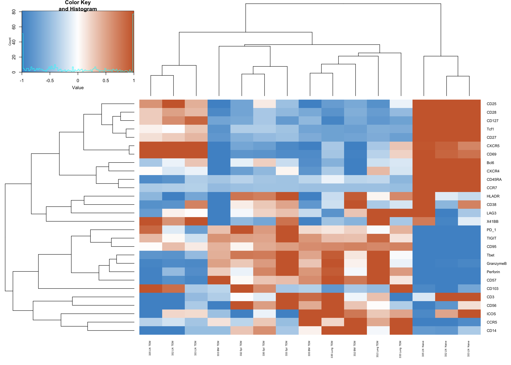
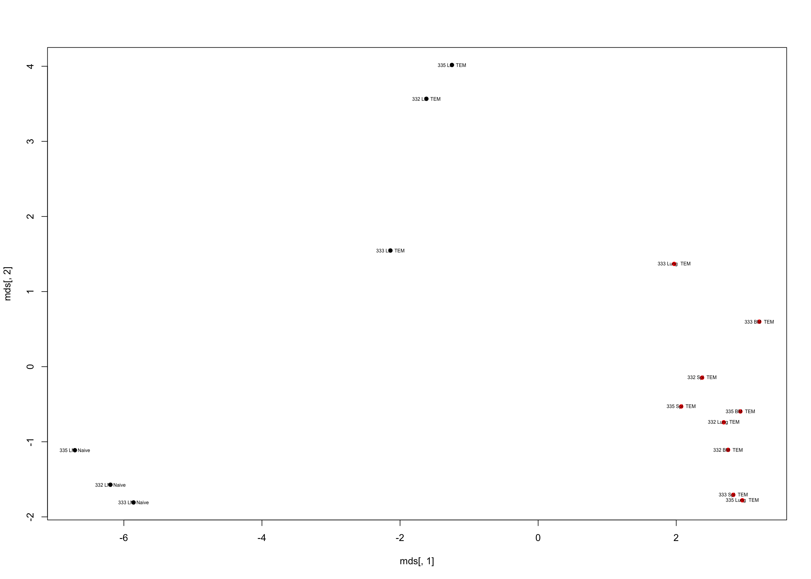
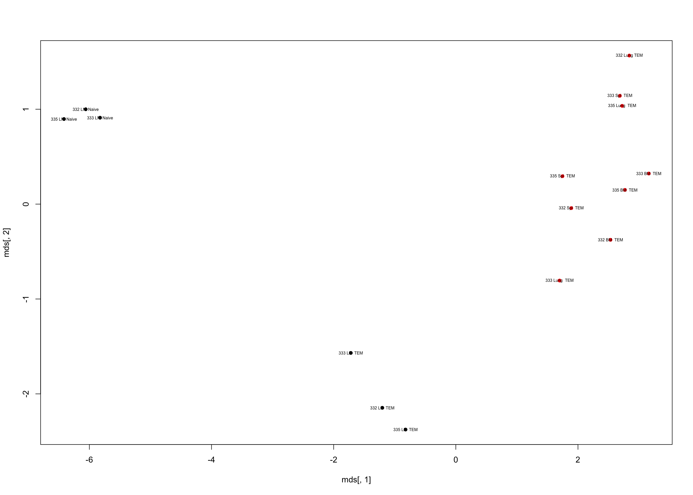

Last updated: 2018-10-11
workflowr checks: (Click a bullet for more information) ✖ R Markdown file: uncommitted changes
The R Markdown is untracked by Git. To know which version of the R Markdown file created these results, you’ll want to first commit it to the Git repo. If you’re still working on the analysis, you can ignore this warning. When you’re finished, you can run wflow_publish to commit the R Markdown file and build the HTML.
✔ Environment: empty
Great job! The global environment was empty. Objects defined in the global environment can affect the analysis in your R Markdown file in unknown ways. For reproduciblity it’s best to always run the code in an empty environment.
✔ Seed:
set.seed(20181011)
The command set.seed(20181011) was run prior to running the code in the R Markdown file. Setting a seed ensures that any results that rely on randomness, e.g. subsampling or permutations, are reproducible.
✔ Session information: recorded
Great job! Recording the operating system, R version, and package versions is critical for reproducibility.
✔ Repository version: d555079
wflow_publish or wflow_git_commit). workflowr only checks the R Markdown file, but you know if there are other scripts or data files that it depends on. Below is the status of the Git repository when the results were generated:
Ignored files:
Ignored: .DS_Store
Ignored: analysis/.Rhistory
Ignored: docs/.DS_Store
Untracked files:
Untracked: analysis/MDS.Rmd
Untracked: docs/figure/
Unstaged changes:
Modified: analysis/Heatmap.Rmd
Modified: analysis/_site.yml
Modified: analysis/index.Rmd
knitr::opts_chunk$set(echo = TRUE, warning = FALSE, message = FALSE,
fig.height = 10, fig.width = 14)
library(dplyr)
library(tidyr)
library(ggplot2)
library(gapminder)
library(magrittr)
library(gplots)###Overview
This is what the Raw data looks like:
[1] "Time" "Event_length" "Y89Di"
[4] "Pd102Di" "Viability" "Pd104Di"
[7] "Pd105Di" "Pd106Di" "Pd108Di"
[10] "Pd110Di" "CD57" "In115Di"
[13] "I127Di" "Xe131Di" "Cs133Di"
[16] "Ba138Di" "Ce140Di" "CD28"
[19] "CD19" "Ce142Di" "CD45RA"
[22] "CD103" "CD4" "CD8"
[25] "Perforin" "CD16" "CD127"
[28] "CD1c" "CD123" "CD66b"
[31] "PD_1" "ICOS" "CD27"
[34] "CCR5" "Bcl6" "Tcf1"
[37] "CD14" "CD56" "Dy162Di"
[40] "CXCR5" "CD69" "X41BB"
[43] "CD25" "CCR7" "CD3"
[46] "Tbet" "CD38" "CD95"
[49] "LAG3" "CXCR4" "HLADR"
[52] "TIGIT" "Lu176Di" "GranzymeB"
[55] "Ta181Di" "Os189Di" "DNA"
[58] "Osmium" "DNA.1" "CD45_194"
[61] "CD45_195" "CD45_196" "CD45_198"
[64] "Bi209Di" "bc_separation_dist" "mahalanobis_dist"
[67] "File.Identifier" The problem is there is a separate file for each Tissue site (a variable) :
Raw_BM_TEM <- read.csv("data/BM_TEM_D332_333_335_exp2.csv")
Raw_Spl_TEM <- read.csv("data/SPL_TEM_D332_333_335_exp2.csv")
Raw_LN_TEM <- read.csv("data/LLN_TEM_D332_333_335_exp2.csv")
Raw_Lng_TEM <- read.csv("data/Lung_TEM_D332_333_335_exp2.csv")
Raw_LN_Naive <- read.csv("data/LLN_Naive_D332_333_335_exp2.csv")In order to fix this, the next step is to merge the data from each file, which cnotained data on all the cells within on subset (Naive or Memory T cells from a particular tissue), into a database/file with all the data from each cell subset from different tissues together. I call the merged data “tidy” data below.
Tidy data is a uniform way to make data more organized and easier to do statsitics and analysis on. Here I will put the data into the tidy format. This consists of three steps:
1.Only Keep relevant columns in data set:
# A function to keep a subset of columns in the dataframe
# and to fix an aritifact in the File.Identifier column
tidyDataColumns <- function(RawData) {
# Name columns to keep
keeps <- c("Time","CD57","CD28","CD45RA","CD103","Perforin",
"CD127","PD_1","ICOS","CD27","CCR5","Bcl6",
"Tcf1","CD14","CD56","CXCR5","CD69","X41BB","CD25",
"CCR7","CD3","Tbet","CD38","CD95","LAG3",
"CXCR4","HLADR", "TIGIT","GranzymeB",
"File.Identifier")
# The subset of the raw data that contains columns defined above
KeyMarkersdf <- RawData[keeps]
# There is an artifact of the data
# The "File.Identifier" column was generated from the FCSexpress program
# This column is a number 1-12 that is a unique identifier
# The unique identifier tells you what sample the cells are from
# For example, 1 = Bome marrrow from D332, 2= BM from D333
# The key to this identifier is in step 2 of tidy data below
# The artifact is that the he program outputs the File.Identifier number
# as a real number ie. (1.04243) instead of an integer ie. (1)
# Therefore I rounded the File.Identifier column here:
File.ID.Rounded <- round(KeyMarkersdf$File.Identifier, digits=0)
# Take away the non-rounded file identifier
NoFileIDdf <- subset(KeyMarkersdf, select = -c(File.Identifier) )
# Add_Rounded_FileID to the dataframe
NoFileIDdf$File.ID <- File.ID.Rounded
# Rename the dataset
Tidydf <- NoFileIDdf
}
# Apply this function to all data sets
Tidy_BM_TEM <- tidyDataColumns(Raw_BM_TEM)
Tidy_LN_TEM <- tidyDataColumns(Raw_LN_TEM)
Tidy_Spl_TEM <- tidyDataColumns(Raw_Spl_TEM)
Tidy_Lung_TEM <- tidyDataColumns(Raw_Lng_TEM)
Tidy_LN_Naive <- tidyDataColumns(Raw_LN_Naive)Remember that for this data set, the tissue varibale can still be disintuigshed by the file ID column. However the subset Variable cannot, So i will add this variable to each data set:
Add a column that says subset name as a new variable:
Tidy_BM_TEM["Subset"] <- "TEM"
Tidy_LN_Naive["Subset"] <- "Naive"
Tidy_LN_TEM["Subset"] <- "TEM"
Tidy_Lung_TEM["Subset"] <- "TEM"
Tidy_Spl_TEM["Subset"] <- "TEM" And now combine each data set by adding new rows:
TidyMasterData <- do.call( "rbind", list(Tidy_BM_TEM,
Tidy_LN_Naive,Tidy_LN_TEM,
Tidy_Spl_TEM, Tidy_Lung_TEM))The “File.Identifier” column has a key which reveals what variables they represent:
#add tissue and donor column
TidyMasterData["Tissue"] <- NA
TidyMasterData["Donor"] <- NA
library(dplyr)
#Here is the key for what the File.ID column is
File.Identifier_Key <- read.csv("data/File Identifier key.csv")
File.Identifier_Key File.Identifier Tissue Donor
1 1 BM 332
2 2 BM 333
3 3 BM 335
4 4 LN 332
5 5 LN 333
6 6 LN 335
7 7 Spl 332
8 8 Spl 333
9 9 Spl 335
10 10 Lung 332
11 11 Lung 333
12 12 Lung 335#Use the File.Identifier Key to label the table for the correct variables
#associated with the observations
for (i in 1:length(File.Identifier_Key[,1])) {
TidyMasterData$Tissue[TidyMasterData$File.ID==i] <- as.character(
File.Identifier_Key$Tissue[i])
TidyMasterData$Donor[TidyMasterData$File.ID==i] <- File.Identifier_Key$Donor[i]
}
library(dplyr)
sample_n(TidyMasterData, 10) Time CD57 CD28 CD45RA CD103 Perforin
12482 3052889.0 0.0000000 10.4616747 65.532646 4.2791147 0.0000000
22583 2477453.8 27.5143013 1.7449024 30.124714 2.8983617 2.1181090
9964 2062071.4 0.0000000 9.6124620 51.383289 1.4989811 0.0000000
8231 1309426.8 0.0000000 8.7191391 41.999260 0.0000000 0.1017744
21626 20017.3 0.0000000 0.7420194 10.083414 0.7017327 0.0000000
30728 214783.2 389.6552120 1.0181687 23.803776 1.4961168 9.0503149
13288 3384093.2 0.0000000 2.9584415 32.632576 5.8124824 0.0000000
25444 1264457.6 0.3135303 0.0000000 6.929728 0.0000000 1.7541263
26176 3800311.8 133.1827390 0.0000000 23.538940 0.0000000 4.4657054
25989 2162710.2 0.0000000 0.0000000 31.800388 0.0000000 0.0000000
CD127 PD_1 ICOS CD27 CCR5 Bcl6
12482 71.526779 0.0000000 3.9467885 46.652424 11.0198584 120.85487
22583 0.000000 11.2247086 0.0000000 1.461333 40.4986839 35.82096
9964 56.798302 1.0366619 4.9925332 67.634201 0.0000000 94.91830
8231 20.272024 0.0000000 0.2485409 49.772007 0.0000000 97.81692
21626 28.041721 0.0000000 2.9602876 36.702774 0.0000000 44.16980
30728 0.000000 0.4969150 11.1574450 2.493632 33.3880043 52.86784
13288 29.565361 0.4751325 3.7910097 42.857987 2.9581644 79.65339
25444 23.420727 0.0000000 8.1495915 31.798397 0.0000000 56.89161
26176 9.755482 1.7383016 5.7117133 0.000000 11.0411301 29.13682
25989 0.000000 2.6570585 3.6292398 8.048411 0.6815187 38.47914
Tcf1 CD14 CD56 CXCR5 CD69 X41BB
12482 23.3373318 2.763588 1.9218677 0.2456421 61.382969 2.5256660
22583 6.6600347 6.843864 1.0752317 0.0000000 46.022652 0.0000000
9964 22.4082279 0.000000 4.1782241 0.0000000 21.253954 0.8096662
8231 14.8541679 1.086994 0.1143518 0.0000000 6.732335 0.4889751
21626 0.0000000 3.854252 3.8566990 0.8616908 74.698143 0.0000000
30728 0.5892567 7.962752 0.0000000 0.0000000 0.000000 0.0000000
13288 22.3914757 4.812201 1.9097412 1.5275912 15.093721 0.0000000
25444 3.4665031 0.000000 0.0000000 0.6550379 77.597321 4.3491702
26176 14.2388973 0.000000 0.0000000 0.0000000 4.963767 0.9992685
25989 1.5676321 0.000000 4.1207428 2.3613768 7.372880 0.0000000
CD25 CCR7 CD3 Tbet CD38 CD95 LAG3
12482 8.0901480 40.257751 154.15951 0.000000 0.849502 1.274513 0.000000
22583 0.0000000 0.000000 53.00237 2.031536 0.000000 11.676749 3.168458
9964 2.2880900 27.045574 129.51741 0.000000 2.612077 0.000000 2.030489
8231 0.6758201 20.734657 61.39169 0.000000 15.220687 0.000000 0.000000
21626 2.7292330 4.223935 76.97710 0.000000 0.000000 34.390804 2.882162
30728 0.0000000 0.000000 177.50055 27.441727 24.993000 14.733407 1.074729
13288 0.0000000 30.341860 86.11874 0.000000 5.806004 1.181141 0.000000
25444 1.5706594 4.274484 58.87841 15.439473 1.077121 8.922639 1.244547
26176 0.0000000 0.000000 68.17571 0.603026 4.640015 20.016600 0.000000
25989 0.3310154 0.000000 201.28552 6.956091 11.564195 23.709627 2.352111
CXCR4 HLADR TIGIT GranzymeB File.ID Subset Tissue
12482 103.3182750 8.8904839 0.0000000 3.9545774 4 Naive LN
22583 0.0000000 3.2654841 1.0716771 0.0000000 4 TEM LN
9964 99.6391907 8.7387104 0.9357023 0.0000000 4 Naive LN
8231 28.7305393 0.0000000 0.3774966 5.6018610 4 Naive LN
21626 10.5007610 0.8004771 3.5635478 1.6865807 4 TEM LN
30728 0.6421028 3.4453962 10.2577267 38.3436928 12 TEM Lung
13288 53.9502449 0.0000000 1.5432042 0.4768642 4 Naive LN
25444 8.9444885 6.4891329 23.6278095 0.0000000 6 TEM LN
26176 36.9129753 0.0000000 0.0000000 0.0000000 7 TEM Spl
25989 30.2758751 6.5556626 11.5635653 0.0000000 7 TEM Spl
Donor
12482 332
22583 332
9964 332
8231 332
21626 332
30728 335
13288 332
25444 335
26176 332
25989 332Now to fix order of the columns so that the fixed variables ( File.ID, Subset, Tissue, and Donor) are first, and the oberserved variables (Protein names like CD57, T-bet , etc. are next). Here we will also remove the Time and File.ID column since those are no longer needed.
#Remove columns that are not needed by their number in the dataframe
TidyData <- TidyMasterData[,c(33,32,31,2:29)]
sample_n(TidyData, 10) Donor Tissue Subset CD57 CD28 CD45RA CD103
12326 332 LN Naive 3.5479681 16.1403656 42.65883 0.00000
26500 335 Spl TEM 162.8388670 0.0000000 16.51673 0.00000
10595 332 LN Naive 1.8064305 1.6539863 31.88200 0.00000
32594 335 Lung TEM 399.6445620 0.0000000 31.87990 1.52408
14281 333 LN Naive 0.0000000 1.3434770 73.98100 0.00000
32468 335 Lung TEM 432.0054930 4.4038434 25.74431 0.00000
19158 335 LN Naive 3.4416356 4.4924235 36.43336 0.00000
26921 335 Spl TEM 3.8298383 4.6303797 10.20481 23.98906
21008 335 LN Naive 0.3238374 0.9497529 34.51559 0.00000
14835 333 LN Naive 0.0000000 3.8715191 39.54944 0.00000
Perforin CD127 PD_1 ICOS CD27 CCR5
12326 0.0000000 20.367424 0.000000 6.44999599 42.8757095 0.000000
26500 8.8513870 0.000000 7.929127 4.95029831 1.1932241 13.589672
10595 0.8889149 52.509113 0.000000 9.76167965 62.3691216 2.172892
32594 1.5139753 1.568818 0.000000 0.00000000 0.6887403 10.675126
14281 0.0000000 11.909213 0.000000 7.95904112 78.9794922 2.197940
32468 2.0074165 1.306051 0.000000 10.19522760 0.0000000 35.263592
19158 0.0000000 33.989788 0.000000 0.05259372 75.5338821 1.003628
26921 3.2857223 12.586861 0.000000 0.55556047 2.6051440 0.000000
21008 0.0000000 49.984177 0.000000 12.55974290 74.8470917 3.367430
14835 7.6218162 18.856031 2.206394 8.99352932 57.6641006 1.645800
Bcl6 Tcf1 CD14 CD56 CXCR5 CD69 X41BB
12326 112.92525 16.776300 0.0000000 9.253509 1.2781196 44.616394 0.000000
26500 66.93407 0.000000 2.8744013 3.461496 0.0000000 0.000000 1.539745
10595 69.59129 7.389476 0.0000000 0.000000 0.0000000 19.798977 0.000000
32594 15.60241 1.284688 0.0000000 0.000000 0.0000000 0.000000 0.000000
14281 104.76541 10.693748 0.2905540 1.669858 0.0000000 3.097456 0.792520
32468 122.58945 0.000000 0.4105328 0.000000 0.0000000 4.445329 0.000000
19158 26.34832 4.708960 0.0000000 0.000000 5.1722469 48.255077 3.935203
26921 103.07275 11.561901 0.0000000 2.320044 0.4918753 6.011547 0.000000
21008 76.09916 10.536107 0.0000000 0.000000 1.2728819 70.435715 0.000000
14835 36.05440 2.624294 0.0000000 0.000000 2.1878469 36.972111 0.000000
CD25 CCR7 CD3 Tbet CD38 CD95
12326 0.0000000 22.894869 110.73998 0.00000000 3.202744 0.6102469
26500 0.0000000 8.438256 88.03909 72.44131470 18.692051 13.7280159
10595 0.7547693 45.147785 144.94870 0.01193897 3.669466 0.0000000
32594 0.7567927 0.000000 155.78635 15.07305340 20.915935 0.0000000
14281 1.5078700 29.948021 122.97146 0.63559800 5.795063 1.7438689
32468 0.0000000 4.622541 113.35664 81.76174160 8.278605 23.0002651
19158 0.0000000 38.893280 136.18983 0.00000000 25.452318 0.0000000
26921 0.0000000 0.000000 64.75572 3.76865649 2.821257 36.8669853
21008 2.0442677 26.662825 213.80479 0.00439385 5.203176 0.0000000
14835 1.6895120 29.713591 80.71461 1.18051696 1.544926 1.6310199
LAG3 CXCR4 HLADR TIGIT GranzymeB
12326 0.7669154 47.935215 7.97988749 1.0936548 0.5854853
26500 0.3372521 8.688261 5.79692793 7.8061881 122.0800250
10595 0.0000000 92.558578 8.11340141 0.0000000 0.1452501
32594 0.0000000 2.194113 0.00000000 15.4270821 8.7272892
14281 1.8477941 53.221272 0.00000000 0.0000000 0.0000000
32468 4.3515425 2.585573 2.97388363 4.7753491 37.1372490
19158 0.0000000 65.013924 0.05500008 0.1063416 0.0000000
26921 6.7370343 63.792793 6.98547792 0.3998263 1.3379796
21008 5.6707115 48.159386 9.59017086 0.0000000 6.4415469
14835 0.0000000 37.763042 0.00000000 0.0000000 0.0000000Time to make the last changes to make tidy data. Let’s add a column to be a unique identifier for each cell number
TidyData["Cell"] <- 1:nrow(TidyData)
TidyDatabyCell<- TidyData[,c(32,1:31)]
messy <- TidyDatabyCell
library(tidyr)This will turn all the marker variables into rows instead of columns
Cell Donor Tissue Subset Marker Expression
412464 21144 335 LN Naive CD14 0.0000000
679812 27612 335 Spl TEM Tbet 5.2710877
162312 31872 335 Lung TEM Perforin 0.0000000
742175 24755 335 LN TEM CD95 7.6273899
847812 32562 335 Lung TEM HLADR 0.2298846
827195 11945 332 LN Naive HLADR 0.0000000
655841 3641 335 BM TEM Tbet 6.0274572
352990 26890 335 Spl TEM Bcl6 24.9591103
196418 758 332 BM TEM PD_1 0.0000000
381642 22932 332 LN TEM Tcf1 19.3363304 Cell Donor Tissue Subset CD57 CD28 CD45RA CD103
11186 11186 332 LN Naive 0.000000 3.9543002 33.396954 1.62798262
22498 22498 332 LN TEM 2.666175 13.4650764 9.619907 5.22601223
21366 21366 335 LN Naive 0.000000 9.0468292 50.042999 0.26212281
5586 5586 332 LN Naive 0.000000 12.8031540 33.366684 1.51445818
27992 27992 335 Spl TEM 346.973328 0.0000000 12.069767 1.89686465
6739 6739 332 LN Naive 0.000000 1.4548757 34.738941 1.52648580
15377 15377 333 LN Naive 0.000000 2.9653280 48.508888 0.41549999
20645 20645 335 LN Naive 0.000000 0.1215935 18.903549 0.33138862
20940 20940 335 LN Naive 0.000000 0.0000000 38.742775 0.00000000
6121 6121 332 LN Naive 0.000000 14.3798237 60.549965 0.07225197
Perforin CD127 PD_1 ICOS CD27 CCR5
11186 0.00000000 21.868751 0.0000000 3.896947 35.534409 2.3063550
22498 0.00000000 48.269112 0.0000000 7.261716 1.622978 0.4794932
21366 0.83414227 48.484493 1.0520635 7.702374 116.637329 0.7212923
5586 0.00000000 36.066849 0.0000000 1.676438 66.092102 0.9791052
27992 2.31230903 2.059284 0.0000000 3.004137 3.128674 0.6223021
6739 0.03081994 40.084812 0.3261564 2.181373 74.648621 0.2780217
15377 0.68811399 33.188930 0.0000000 3.729378 58.530567 2.1980071
20645 3.41959739 28.931566 0.0000000 20.973642 39.225414 1.5451697
20940 0.00000000 66.901367 0.0000000 0.000000 87.849182 2.0648947
6121 0.00000000 10.401176 0.0000000 6.809335 70.318382 11.5594912
Bcl6 Tcf1 CD14 CD56 CXCR5 CD69
11186 84.395943 19.2539101 10.7720966 0.0000000 0.0000000 31.472954
22498 26.527594 1.3588976 5.9068999 0.0000000 0.0000000 9.786564
21366 33.770554 11.1550579 0.6334616 0.0000000 3.1669857 56.790966
5586 67.817955 12.2039557 0.0000000 0.2408703 5.1173630 20.888622
27992 110.395775 0.0000000 0.5863480 0.0000000 0.6295513 8.603872
6739 118.619720 7.8584333 7.6169691 0.0000000 0.0000000 0.000000
15377 127.348083 15.2681103 1.8813030 0.0385220 0.0000000 76.900742
20645 8.625305 0.4567184 0.0000000 0.6284733 0.0000000 13.747850
20940 42.031639 8.2151594 0.0000000 0.0000000 0.0000000 34.386799
6121 124.014343 24.8831902 1.2968932 0.0000000 0.0000000 15.873423
X41BB CD25 CCR7 CD3 Tbet CD38
11186 0.3202614 1.095054 51.1333008 58.27535 0.0000000 15.700752
22498 0.0000000 4.170218 3.4168644 115.79676 0.0000000 16.079151
21366 1.2095101 1.800200 41.5516853 92.21920 1.0094702 0.593292
5586 0.4600236 0.000000 24.1463680 65.84097 0.0000000 9.607365
27992 0.0000000 0.000000 0.9219649 83.36319 64.5584946 7.733719
6739 0.0000000 0.000000 29.3261719 148.60051 0.6828969 22.895491
15377 0.0000000 3.128037 29.1528416 92.32624 2.3798010 1.043227
20645 0.4795936 3.076918 35.1303329 165.02714 0.5924067 21.817274
20940 0.0000000 0.000000 55.2929955 135.98094 4.7132320 13.953125
6121 0.0000000 2.041931 21.4184494 154.51317 0.0000000 26.498049
CD95 LAG3 CXCR4 HLADR TIGIT GranzymeB
11186 9.1535826 0.00000000 73.29827 18.3139133 0.000000 0.1662000
22498 77.6332016 2.34585786 18.01055 8.5378866 0.000000 0.0000000
21366 0.0000000 0.77847826 102.41903 0.2728658 0.000000 0.0000000
5586 2.2386215 0.87331909 26.24110 0.3903059 1.166781 0.6700124
27992 8.4616385 0.00000000 13.37570 0.0000000 6.682945 133.9985200
6739 0.0000000 0.06814285 25.94595 6.2613845 0.000000 8.9976063
15377 0.0000000 0.00000000 49.69431 0.9809710 0.000000 0.6598240
20645 0.1572662 1.00174832 43.41120 1.2679009 0.000000 0.0000000
20940 0.0000000 0.00000000 71.31525 0.0000000 0.000000 2.0284975
6121 1.5017062 0.00000000 10.80466 0.0000000 0.000000 3.2179015#used this tutorial: http://stat545.com/block023_dplyr-do.html
library(dplyr)
library(gapminder)
#this function allows multiple pipes to use with dplyr
library(magrittr)
meanDB <- tidy %>%
group_by(Donor,Tissue, Subset, Marker) %>%
summarize(meanExpression = mean(Expression))
#and Z score of this data
ZscoreDB <- meanDB %>%
group_by(Donor,Marker) %>%
mutate(z_score = scale(meanExpression))
ZscoreDB <- as.data.frame(ZscoreDB)
meanZscoredf <- ZscoreDB#create unique name for each sample type
MeanZscore_SampleIDdf <- meanZscoredf
MeanZscore_SampleIDdf$Sample <- paste(MeanZscore_SampleIDdf$Donor,MeanZscore_SampleIDdf$Tissue,MeanZscore_SampleIDdf$Subset)
sample_n(MeanZscore_SampleIDdf,10) Donor Tissue Subset Marker meanExpression z_score Sample
2 332 BM TEM CCR5 43.7626522 1.37110919 332 BM TEM
413 335 Spl TEM ICOS 6.1190443 -0.08596611 335 Spl TEM
88 332 Lung TEM CD103 2.2166944 -0.51794754 332 Lung TEM
173 333 LN Naive CD127 32.1652558 1.28961452 333 LN Naive
39 332 LN Naive CD38 7.9659917 -0.54967855 332 LN Naive
51 332 LN Naive PD_1 0.2779032 -1.43422526 332 LN Naive
142 333 BM TEM CCR5 17.3256352 0.14452009 333 BM TEM
214 333 LN TEM CXCR5 1.3780427 1.11179460 333 LN TEM
133 332 Spl TEM ICOS 2.5446767 -1.74993704 332 Spl TEM
341 335 LN TEM CD127 23.7381331 0.27712018 335 LN TEMLets first get the data “untidy” so it’s easier to use heatmap.2
library(tidyr)
Zscoredf <- MeanZscore_SampleIDdf[,c(4,6,7)]
ZscoreforHeatmap <- spread(Zscoredf, Marker, z_score)
ZscoreforHeatmap_justValues <- ZscoreforHeatmap[,-c(1)]
#name rows of the df for heatmap plotting so labels showup
rownames(ZscoreforHeatmap_justValues) <- ZscoreforHeatmap[,1]
#graph heatmap
#going to try following this [heatmap #tutorial](http://varianceexplained.org/r/love-actually-network/)
#color cheat sheet https://www.nceas.ucsb.edu/~frazier/RSpatialGuides/colorPaletteCheatsheet.pdf
library(gplots)
my_palette <- colorRampPalette(c("steelblue3", "white", "sienna3"))(n = 100)
heatmap.2(as.matrix(t(ZscoreforHeatmap_justValues)),trace="none",col=my_palette,cexRow=0.75, cexCol=0.5, breaks=c(seq(-1,1,0.02)))
[1] "Bcl6" "CCR5" "CCR7" "CD103" "CD127"
[6] "CD14" "CD25" "CD27" "CD28" "CD3"
[11] "CD38" "CD45RA" "CD56" "CD57" "CD69"
[16] "CD95" "CXCR4" "CXCR5" "GranzymeB" "HLADR"
[21] "ICOS" "LAG3" "PD_1" "Perforin" "Tbet"
[26] "Tcf1" "TIGIT" "X41BB" SelectZscores <-ZscoreforHeatmap_justValues[,-c(4,6,10,11,13,15,20,21,22,28)]
my_palette <- colorRampPalette(c("steelblue3", "white", "sienna3"))(n = 100)Now lets to some MDS plotting and K means clustering
#Using this [tutorial](http://genomicsclass.github.io/book/pages/clustering_and_heatmaps.html) to make some MDS plots and do kMeans
#kmeans on MDS plot
set.seed(1)
d <- dist(ZscoreforHeatmap_justValues)
km <- kmeans(ZscoreforHeatmap_justValues, centers = 2)
names(km)[1] "cluster" "centers" "totss" "withinss"
[5] "tot.withinss" "betweenss" "size" "iter"
[9] "ifault" mds <- cmdscale(d)
plot(mds[,1], mds[,2], col=km$cluster, pch=16 )
text(mds[,1], mds[,2], names(km$cluster),cex=0.5)
#kmeans only on some markers
set.seed(1)
d <- dist(SelectZscores)
km <- kmeans(SelectZscores, centers = 2)
names(km)[1] "cluster" "centers" "totss" "withinss"
[5] "tot.withinss" "betweenss" "size" "iter"
[9] "ifault" mds <- cmdscale(d)
plot(mds[,1], mds[,2], col=km$cluster, pch=16 )
text(mds[,1], mds[,2], names(km$cluster),cex=0.5)
R version 3.4.4 (2018-03-15)
Platform: x86_64-apple-darwin15.6.0 (64-bit)
Running under: macOS Sierra 10.12.6
Matrix products: default
BLAS: /Library/Frameworks/R.framework/Versions/3.4/Resources/lib/libRblas.0.dylib
LAPACK: /Library/Frameworks/R.framework/Versions/3.4/Resources/lib/libRlapack.dylib
locale:
[1] en_US.UTF-8/en_US.UTF-8/en_US.UTF-8/C/en_US.UTF-8/en_US.UTF-8
attached base packages:
[1] stats graphics grDevices utils datasets methods base
other attached packages:
[1] bindrcpp_0.2.2 gplots_3.0.1 magrittr_1.5 gapminder_0.3.0
[5] ggplot2_3.0.0 tidyr_0.8.0 dplyr_0.7.4
loaded via a namespace (and not attached):
[1] Rcpp_0.12.16 compiler_3.4.4 pillar_1.2.2
[4] git2r_0.21.0 plyr_1.8.4 workflowr_1.1.1
[7] bindr_0.1.1 bitops_1.0-6 R.methodsS3_1.7.1
[10] R.utils_2.6.0 tools_3.4.4 digest_0.6.15
[13] evaluate_0.10.1 tibble_1.4.2 gtable_0.2.0
[16] pkgconfig_2.0.1 rlang_0.2.0 yaml_2.1.19
[19] withr_2.1.2 stringr_1.3.0 knitr_1.20
[22] caTools_1.17.1 gtools_3.5.0 tidyselect_0.2.4
[25] rprojroot_1.3-2 grid_3.4.4 glue_1.2.0
[28] R6_2.2.2 rmarkdown_1.9 gdata_2.18.0
[31] purrr_0.2.4 whisker_0.3-2 backports_1.1.2
[34] scales_1.0.0 htmltools_0.3.6 assertthat_0.2.0
[37] colorspace_1.3-2 KernSmooth_2.23-15 stringi_1.2.2
[40] lazyeval_0.2.1 munsell_0.5.0 R.oo_1.22.0 This reproducible R Markdown analysis was created with workflowr 1.1.1